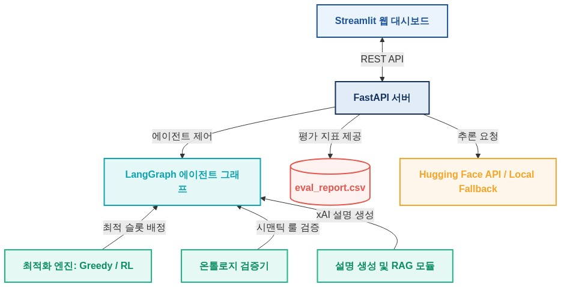
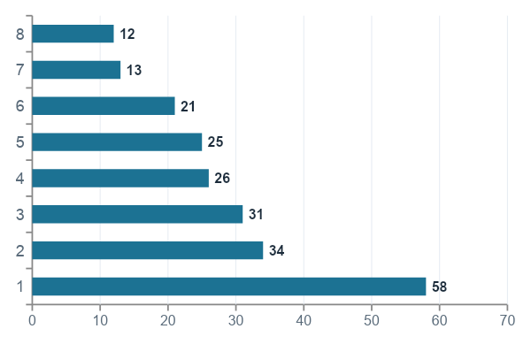
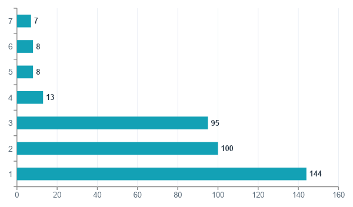
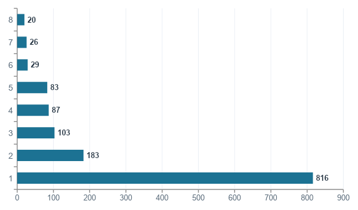
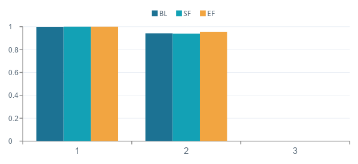

데이터를 근거 있는 적재 권고안으로 바꾸고, 그 권고안을 규정·그래프 근거와 함께 설명하는 End‑to‑End 흐름을 실제로 작동시킨다. 1개월 MVP는 도메인 특화 SLM(PortSLM)에 집중.
본선 적재 계획은 선박 안정성 · 중량 분포 · POD별 반출 순서 · 특수화물(DG·Reefer·OOG) 위치 · 야드 재취급 최소화 · 크레인 작업 시퀀스를 동시에 고려해야 하는 고차원 의사결정 문제다.
숙련 플래너 경험에 의존 → 판단 편차와 설명 근거의 비표준화. 재현·자동검증 어려움.
야드 위치와 선적 순서 불일치 → 불필요한 재취급(Rehandling)으로 장비·시간 낭비.
TOS · AIS · 게이트 · CLL/BAP가 분리되어 통합 판단·근거 추적이 어려움.
정의 본 프로젝트는 계획을 대신 확정하는 자동화가 아니라, 플래너가 후보안과 근거를 빠르게 검토·승인하는 Human‑in‑the‑Loop 의사결정지원 시스템이다.
단순 챗봇·단순 최적화가 아니라 “계획 생성 + 제약 검증 + 근거 설명 + 대시보드 승인”을 하나로 묶은 근거 기반 운영 의사결정 구조.
주 트랙 트랙1 — 도메인 특화 SLM(PortSLM) · Edge AI
보조·MVP 초점 트랙2 — 멀티에이전트 워크플로우 & 실무 지능형 서비스
1차 목표는 현재 기술의 통합·작동(Integration)이며 최적화 성능 SOTA 경신이 아니다. (ADR‑0001) 유효 적재계획 생성 + 전 흐름 동작이 핵심.
| 단계 | 핵심 작업 | 담당 | 상태 |
|---|---|---|---|
| 기획 (P1) | 문제정의 · 아키텍처 · 화면정의서 v1.0 · KPI 정의 | 임석제·오경환 | 완료 |
| 데이터 (P2) | 시드 60건·RL산출물·SOP 인계 → SFT 증강 · Train/Val/Test 분리 · EDA·검증 | 유홍성·임석제 | 진행중 |
| 모델링 (P3) | 베이스 모델 선정·스모크런 완료 → QLoRA 파인튜닝·HP 실험 | 임석제·박인선 | 착수 |
| 평가·서빙 (P4·P5) | 정량/LLM‑judge 평가 · INT4 양자화 · FastAPI 서빙 · UI 통합 | 박인선·오경환 | 예정 |
계약(작업 경계) YardState CandidatePlan Violation Recommendation → 동결 후 mock 기반 4인 병렬개발 · L0 방법론 AI‑Native(바이브) + SDD + GitHub flow
※ 명세서 기반 설계(SDD)와 GitHub Flow 계약 구조에 따라 각 모듈은 인터페이스로 고정되어 병렬 개발을 지원합니다.

↺ 위반 발생 시 plan 단계로 재시도 (max 3회) · LLM은 설명에만 사용하는 결정론적 흐름
보유 RL 모델 재사용을 기본 채택(목표=기술 통합). 교체 가능 인터페이스, CP‑SAT는 조건부 향후 비교.
Python 단일 런타임 · 질의 Cypher/SQL · 입력 EDIFACT. AI/ML 생태계 정합·통합비용↓.
적재중량 · DG bay · Reefer bay · 반출순서 · 재취급(BLOCKS) 충돌 탐지.
시스템 개요 · 빠른 시작 · 모델 로딩/GPU 상태
파인튜닝 모델 질의응답 · 근거 출처 표기 · “모른다” 가드
Base vs Tuned 좌우 2열 · 답변/근거/지표 탭 · 생성시간
BLEU·ROUGE·BERTScore 전/후 · LLM-as-judge · 도메인 용어 포함률 · RAGAS · 환각률
모델 경로 · Max tokens · Temperature · Top‑p · RAG 토글
질의 이력 조회·검색·재실행 · CSV 내보내기
플랫폼(트랙2) 기획서 기준 8개 화면(메인·데이터/시뮬·계획요청·후보안비교·제약검증·GraphRAG답변·KPI대시보드·이력)을 MVP에서 SLM 데모 6화면(SCR‑01~06)으로 슬라이싱. 출처: 05_PortSLM_화면정의서 v1.0
시뮬레이션 우선(SimulatedProvider). 실데이터 도착 시 정제 스크립트만 추가해 LiveProvider로 어댑터 교체 — 상위 레이어 변경 없음.
실데이터는 data/real/ (git 추적 제외), 공유 샘플은 합성·가명.
정형 9종 (★=코어 — 실 적재·재취급 구동/평가 가능)
비정형 6종 (규정·절차 → RAG·SLM 코퍼스)
태스크: 적재슬롯 추천 설명 · 규정 Q&A
라벨 규칙: R1~R15 제약 규칙 · KPI → SOP 조항 매핑
상태: M1(6/16) 데이터셋 확정 통과, EDA·검증 6/16~6/18 진행중
| 단계 | 처리 내용 | 산출물 |
|---|---|---|
| ① 정제 | 중복 제거 · 결측 보정 · 단위/시간 포맷 통일 · 컨테이너 ID 정규화 | clean_containers.csv |
| ② 구조화 | Vessel/Bay/Row/Tier/Slot 구조 생성 · 컨테이너·야드 위치 매핑 | vessel_slots.csv · yard_state.csv |
| ③ 제약 인코딩 | 중량·POD·DG·Reefer·OOG·좌우/선수미 균형 규칙 변환 | constraints.json |
| ④ RL 환경 변환 | state / action / reward / termination 형식으로 변환 | gym_env_config.json |
| ⑤ KG 적재 | 노드·관계 CSV 생성 → Neo4j import | nodes_*.csv · rels_*.csv |
| ⑥ RAG 처리 | 문서 청크 분할 · 메타데이터 · 임베딩(BGE‑M3) | rag_chunks.jsonl · vector_index |
캐노니컬 스키마(출처 무관) Container Slot YardState CandidatePlan Violation Recommendation
※ 인메모리 처리 및 모킹: 본 MVP에서는 파이프라인 중간
산출물(clean_containers.csv 등)을 물리 파일로 영착하는 대신, SimulatedProvider 및
scikit-learn/networkx 등을 통해 메모리 상에서 동적으로 구조화 및 RAG 인덱싱을 처리하도록 구현하였습니다.
국제 규정 · EDI 표준 · 적재계획 · 운영 SOP · 강화학습 결과를 망라한 항만 도메인 코퍼스를 RAG / LPG / SFT 3대 산출물 형태로 구축 완료
| 카테고리 | 파일 수 | 용량 |
|---|---|---|
| 파인튜닝 자료 (규정·EDI·적재계획) | 151개 | 171.9 MB |
| 강화학습 결과 자료 (PPO BL/SF/EF) | 82개 | 47.4 MB |
| 적재계획 SOP | 14개 | 5.1 MB |
| Safety SOP | 13개 | 2.1 MB |
구성 원칙: 코퍼스별로 청크(RAG), 그래프(LPG), SFT 데이터셋, 설계서를 1세트 표준화하여 연계
26 PDF + 21 docx
규정 원문, EDI 사양서, 튜토리얼, 가이드라인 등 실무 문서 확보
외 ZIP 25, PNG 12, TXT 8, XLSX 7, NPY 4 등 총 260+ 파일
• RAG: chunks · embedding · vector_upsert
• LPG: graph.json · nodes/rels · cypher
• SFT: instruction 데이터셋 (chat/alpaca)



| 엔티티 / 관계 | 건수 |
|---|---|
| Container / Slot (적재 단위) | 337 |
| REL_STACKED_ON (적재 스택) | 270 |
| REL_VIOLATES (제약 위반) | 17 |
| 노드 타입 9종 (Vessel·Bay·Row·Tier·Slot…) | — |
• 가장 큰 그래프: ISPS Code 135노드·530엣지, CVSP 113노드·331엣지
• 의미: 규정 · 적재계획 도메인이 가장 조밀한 관계망을 형성

• 핵심 관찰: EF 정책이 Reward(1,464.5) · VPR(0.9997) · WBI(0.954) 최고
• 적재 유효성: 전 정책 OSR=0 (오버스토우 0건) → 유효성 확보
※ 학습 규모: Lv4 누적 약 8.07M steps / 정책당 4단계 커리큘럼
각 파이프라인 단계는 chunk_id == 벡터DB ID == KG vector_ref 구조로 공유 키를 바인딩하여 설계됨.
→ 이를 통해 지식그래프(LPG) 추론 수행 중 해당 노드의 근거가 되는 원문 문서 청크(RAG)를 즉시 역추적하고, 최종적으로 SFT(지시튜닝) 답변에 출처가 일치하는 명확한 근거(Grounding)를 융합하여 제시(환각 방지).
| 산출물 파일 | 트랙 | 주요 설명 및 용도 |
|---|---|---|
chunks.jsonl |
RAG | 조항/섹션 단위 텍스트 분할본 |
embedding_schema.json |
RAG | 컬럼 사양, 인덱싱 스키마 정의 |
vector_upsert.jsonl |
RAG | 벡터 DB 적재용 페이로드 레코드 |
graph.json |
LPG | NetworkX/Neo4j 연계 노드·엣지 데이터 |
graph_load.cypher |
LPG | Neo4j 적재 전용 Cypher 쿼리 스크립트 |
sft_dataset.jsonl |
SFT | Alpaca/Chat 형식의 파인튜닝 데이터셋 |
파이프라인 설계서.docx |
DOC | 데이터 정제, 추출, 가공 전체 프로세스 문서 |
• 구조화 청킹: 무작위 글자 수 슬라이싱을 지양하고, 법률/규정은 조항·섹션, EDI는 세그먼트, 적재계획 기술문서는 서브챕터 단위로 의미 구조에 맞춰 분할.
• 메타데이터 부여: doc_type, section,
actors, security_level 등 페이로드 필드를 모든 청크에 고정 부여하여 하이브리드 필터링 색인 정밀도 극대화.
• 출처 고정 (Grounding): SFT 데이터셋 및 프롬프트 튜닝 단계에서 외부 정보 개입(환각) 및 임의적 운영 판단을 금지하고, "답변 시 반드시 본문에 명시된 출처(SOP 조항 등)를 인용할 것"을 프롬프트 레벨에서 강제.
• 3트랙 정합성 체크: 공유 키 chunk_id 무결성 검사 스크립트를 빌드 파이프라인에 탑재하여
누락 데이터 자동 필터링.
| 엔진 | 특성 |
|---|---|
| Random / 순차 | 무지성 배정 (하한 기준선) |
| Greedy (POD·중량) | 현실적 휴리스틱 기준선 |
| CP‑SAT | 실 베이 90% 1초내 최적해 (향후 비교) |
| PPO / SAC (RL) | 보유 학습모델 — 후보 계획 생성 |
A Random · B Greedy · C RL단독 · D RL+KG검증 · E RL+KG+GraphRAG — 검증·근거의 단계적 효과 측정
동일 질문에 대해 베이스 모델과 파인튜닝 모델을 좌우 비교 (SCR‑03 핵심 데모).
※ 막대는 목표 방향성 개념도 — 실측치는 M3(6/30) 평가에서 확정.
/generate·/compare| 구성요소 | 선정 | 근거 |
|---|---|---|
| 오케스트레이션 LLM | GPT / Claude API | 에이전트 흐름·설명 생성 (근거 없는 답변 억제) |
| 임베딩 | 다국어 임베딩(BGE‑M3 계열) | 한국어 운영문서 + 영문 항만 약어 동시 검색 |
| 그래프 저장소 | Neo4j (Property Graph) | 컨테이너‑슬롯‑선박‑제약 다중관계 탐색 |
※ 참고 (MVP 대체 구현): (1) 오케스트레이션 LLM: 외부
API 비용 최소화 및 환각 제어를 위해 상용 LLM 대신 순수 파이썬 제어 루프와 템플릿 기반 설명 합성으로 대체 구현했습니다. (2) 임베딩: 무거운
임베딩 모델 대신 scikit-learn의 TF-IDF Vectorizer 기반 인메모리 검색으로 대체 구현했습니다. (3) 그래프 저장소:
Neo4j DB 서버 없이 Python NetworkX 라이브러리를 사용해 지식 그래프를 메모리 상에 동적 적재 및 제약 검증을 수행합니다.
| 항목 | Qwen2.5-VL-3B | Llama 3.2 3B | Gemma 4 E2B |
|---|---|---|---|
| 멀티모달 | 이미지+영상 | 텍스트 전용 | 이미지+오디오 |
| 한국어 지원 | 공식 지원 (29개+) | 미지원 (8개제외) | 공식 지원 (140개+) |
| QLoRA 튜닝 | 안정 (검증됨) | 안정 (검증됨) | KV 버그 존재 |
| 결론/권고 | 최종 선정 (VESSL) | 한국어 리스크 | 툴링 불안정 |
| 항목 | Qwen2.5-1.5B | Qwen2.5-VL-3B | Qwen3-1.7B |
|---|---|---|---|
| 특성 | 텍스트 전용 (경량) | 멀티모달 (도면) | 최신 3세대 (추론) |
| VRAM (튜닝) | ~4 GB (T4 가능) | ~8-10 GB (L4) | ~5 GB (L4) |
| 특이사항 | 전/후 델타 최대 | 도면/스캔 이미지 | Thinking 시 영어 편향 |
| 추천/용도 | 텍스트 전용 최적 | 도면 분석 필수시 | 성능 업그레이드용 |
한 줄 결론: 항만 도메인의 **본선 도면(Bay Plan 등) 및 스캔 문서 이미지 분석**과 **안정적인 한국어 QLoRA 파인튜닝** 일정을 모두 충족하는 베이스 모델은 Qwen2.5-VL-3B가 유일하여 최종 모델로 채택함.
| 지표 | 목표 |
|---|---|
| E2E 작동성 | 핵심 플로우 100% |
| 제약 위반율 | < 1% |
| 응답 속도 | ≤ 5초 (복잡 ≤10초) |
| 검색 적합도 | Top‑5 포함률 ≥ 80% |
| 답변 충실도 | RAGAS ≥ 0.8 / 4점↑ |
| 설명가능성 | 핵심 답변 90%↑ 근거 포함 |
정량 — BLEU · ROUGE · BERTScore · EM · 용어 포함률 · 환각률
정성 — LLM‑judge(정확성·근거성·용어) · 골든셋 30문항 before/after
평가 시나리오 3종 — 일반 / 피크 / 특수화물(DG·Reefer)
게이트 목표 미달 시 데이터·HP 보강 재학습 루프 가동
플래너 검토시간 단축 · 신규 플래너 학습 도구 · 일관된 승인 의사결정. 어댑터 패턴으로 실 TOS 데이터 전환 가능. 창고 적치 · 제조 WIP 배치 · 물류 피킹 · 선석/장비 스케줄링 등 순차 의사결정 도메인에 재사용.